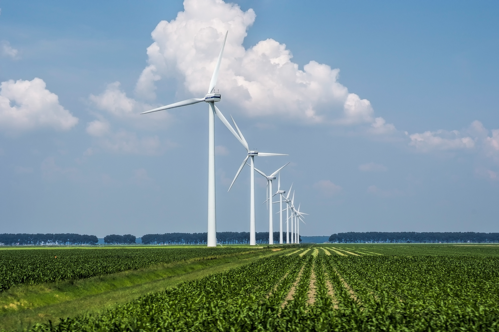

Report 3: Renewable Energy Solutions for a Sustainable Future

Introduction
Fossil fuels to renewable energy transition stands as a key element for stopping the progression of climate change. Renewable power systems including solar power together with wind power and hydroelectric power with geothermal power teach us a lasting path to lower carbon emissions while building national energy independence. The document investigates different renewable energy applications while studying their advantages against obstacles on the way to developing sustainable energy systems.
Overview of Renewable Energy
Renewable energy originates from habitual processes which maintain their ability to replenish. Renewables serve as better energy alternatives to fossil fuels since their supply remains renewable while causing less harm to the environment. Solar power comes from sunlight while wind power generates from air currents and flowing water supplies hydropower and underground heat found deep in the planet generates geothermal power. This technology combination brings specific benefits together with technical barriers which shape both installation and large-scale expansion potential.
Solar Energy: Harnessing the Power of the Sun

Our sun is the source of energy that we need for the planet to thrive. For example, photovoltaic cells (PV) are capable of turning sunlight directly into power, and can be seen on rooftops of homes. In addition, engineers have developed powerful forms of concentrated solar power systems (CSP) that can harness mid-infrared radiation from solar energy. These systems use mirrors or lenses that gather sunlight and focus it into a small area. Once this heat energy is concentrated, it can be used to produce power.
Technology and Applications
Among other places, solar panels are now commonplace on solar farms and rooftops. With the improvement in all the facets of Photovoltaic (PV) technology, the efficiency rates have increased while the costs have decreased. This has made solar energy competitively favorable to be used alongside solar power. The development of bifacial panels and thin film solar cells further pave the way towards efficiency as well as versatility.
Benefits and Challenges
No emissions are produced while using solar energy, which is one of the renewable sources of energy in the world. Furthermore, solar technologies can be deployed from the residential level to the planned design of multi megawatt utility solar parks. The fact alone does indicate a positive solar installation metric. However, due to the fact that sun light can be inconsistent, solar power can be a challenge to generate consistently. To counter that, having energy storage devices such as batteries is vital to ensure there is a stable power supply, especially during the night or cloudy days. Additionally, making photovoltaic (PV) cells usually contains harmful substances which need stern governing control and necessitate recycling programs.
Wind Energy: Turning Air into Electricity
Wind energy uses wind turbines to convert to the kinetic energy of wind into electric power. Both onshore and offshore wind farms have experienced a boom in development which has been spurred by technological advancement and favorable policies.

Mechanisms and Deployment
Modern day wind turbines are designed to produce energy effectively even at lower wind speeds. Addition of variable pitch blades and better control mechanisms have led to improvements in turbine designs. Offshore wind farms do face high upfront construction costs, difficulty in installation and maintenance due to logistical issues, but they do get stronger and more reliable winds which make up for these issues.
Environmental and Economic Considerations
Northwestern Pacific wind energy has low operating expenses and does not greatly damage the environment, but there is criticism surrounding operational noise, visual impact, and damage to bat and bird populations. Careful environmental monitoring and planning should solve these problems oe strategy needs to be developed for building wind turbines. Not only incorporating renewable energy is good for the economy, put putting more funding into electricity projects drives growth and creates employment too.
Hydroelectric and Geothermal Energy: Traditional and Emerging Approaches

Hydroelectric Power
The energy of flowing water powers turbines in hydropower. Large-scale dams, such those on important rivers, can manage flooding, improve agriculture, and produce a sizable quantity of electricity. Nonetheless, careful planning and management are required due to the ecological effects of damming rivers, which include uprooting communities and upsetting aquatic ecosystems.
Geothermal Energy
Geothermal energy uses the inherent heat that the Earth contains, which is kept in subterranean reservoirs. It provides a steady source of electricity regardless of weather variations. Geological circumstances play a major role in the performance of geothermal plants, despite the fact that they are very efficient and emit few emissions. Geothermal exploitation is best suited for areas with high levels of volcanic activity or tectonic movements, such Iceland and portions of the western United States.
Innovations in Energy Storage and Grid Integration
Smart grid technology and reliable energy storage are necessary for the integration of renewable energy sources into current power systems. Lithium-ion batteries, pumped hydro storage, and newer technologies like flow batteries are examples of energy storage devices that help mitigate the supply-demand imbalance that arises in renewable energy systems. Utilities can better control fluctuations and preserve grid stability with the use of demand-response programs and advanced grid management technologies.
Challenges and Opportunities
Renewable energy has a lot of promise, but there are still a number of obstacles to overcome. Although costs have been falling as a result of economies of scale and technological developments, renewable energy projects can still require a large initial capital investment. In order to get these ventures off the ground, policy support—such as tax breaks and subsidies—is frequently essential. Furthermore, major infrastructure improvements and creative regulatory frameworks are needed to integrate a varied mix of renewable sources into the grid.
There are many of chances to grow. Renewable energy has the potential to form the foundation of a sustainable global energy system as long as research keeps lowering costs and increasing efficiency. To ensure that renewable energy not only satisfies growing worldwide demand but also does so in a way that is both environmentally and financially sustainable, international cooperation and public-private partnerships are essential to speeding up this transition.
Conclusion

A revolutionary strategy for combating climate change and attaining energy sustainability is the use of renewable energy sources.
Renewable energy has the ability to displace fossil fuels and build a more robust, clean energy future thanks to developments in
solar, wind, hydropower, and geothermal technologies. To fully reap the benefits of this transformation, obstacles in energy storage,
grid integration, and regulatory frameworks must be overcome. With renewable energy at the core of a sustainable future, the way
forward necessitates concerted efforts from governments, businesses, and communities everywhere.